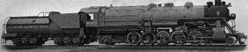

Return to Main Manifest
THE BALDWIN LOCOMOTIVE WORKS
PHILADELPHIA, PA., U. S. A.

LOCOMOTIVE NUMBER 60,000
AN EXPERIMENTAL LOCOMOTIVE
THIS PUBLICATION CONTAINS, ON PAGES 2 TO 59, A REPRINT OF A BOOKLET ISSUED IN
1927, GIVING A DESCRIPTION OF THE LOCOMOTIVE AND RESULTS OF TESTS MADE ON THE
PENNSYLVANIA RAILROAD STATIONARY PLANT AT ALTOONA. THESE TESTS WERE CONDUCTED
DURING THE MONTHS OF AUGUST AND SEPTEMBER, 1926. DURING THE PERIOD OCTOBER,
1926, TO FEBRUARY, 1928, THE LOCOMOTIVE WAS OPERATED IN ROAD TESTS ON THE
PENNSYLVANIA RAILROAD, THE BALTIMORE & OHIO RAILROAD, THE ERIE RAILROAD, THE
CHICAGO, BURLINGTON & QUINCY RAILROAD, THE ATCHISON, TOPEKA & SANTA FE
RAILWAY, THE SOUTHERN PACIFIC LINES, AND THE GREAT NORTHERN RAILWAY. THE
GENERAL RESULTS OF THESE TESTS, AS FAR AS THEY HAVE BEEN MADE AVAILABLE BY THE
RAILROAD COMPANIES MENTIONED, ARE PRESENTED ON PAGES 60 TO 80 OF THE PRESENT
PUBLICATION.
CODE WORD PUBLISHED JUNE, 1928
Editors Note: This project was undertaken by Paul Pullen. Please read the Who & Why section to understand how this document came to be. I thought this information would be must reading for any steam historians and fans, but realized that the many images and charts were need to really be complete. I offered Paul a place to house this work for all to see and study. The bulk of the work was done by Paul. I did the HTML work and converted his images for the Web.
Because of the length of this document, it has been broken down into sections as listed below. Each section has it own images and charts as originally published. To help keep file sizes small, the images are JPG's whereas the charts, being 1 bit graphic files, are in the GIF format. This should be transparent to you the reader with most all newer browsers.
Daniel S. Dawdy
The Cyberspace World Railroad
Table of Contents & Forward
AN EXPERIMENTAL LOCOMOTIVE
Foreword
Locomotive 60,000, the subject of the present publication, was designed
and built by The Baldwin Loco-motive Works as an experiment to ascertain the
gain in efficiency by the use of high pressure steam and high ratios of
expansion. Opportunity was also taken to try out certain novel details of
construction.
Locomotive Number 60,000: This illustration shows the general arrangement of the cylinders and steam
chests, and also of the two valve motions on the right-hand side, which
control the steam distribution to the center and right-hand cylinders
respectively. The absence of any machinery in front of the cylinders should be
noted.
Through the courtesy of the Pennsylvania Railroad the locomotive was
submitted to an extensive program of tests on their locomotive test plant at
Altoona, and it was subsequently given road tests on this line and on a number
of other prominent railroads. The essential details of these tests are now
available.
The present publication consists of four parts:-
I. Design and Construction of Locomotive 60,000
By PAUL T. WARNER.
II. Discussion of Test Results
By LAWFORD H. FRY.
III. Extracts from Test Report of Pennsylvania Railroad.
IV. Extracts from Reports Covering Road Tests on Various Lines.
In presenting the record of the performance of Locomotive 60,000 on the
Altoona Plant, no special claims are made, but information obtained by
impartial observers is made available so that the reader may form his own
judgment as to the success of the experiment-. The Test Report is supplemented
by only such comment as appears to be necessary to set the results in a proper
perspective in relation to those obtained with other loco-motives. In addition
to discussing the more important phases of the performance, it gives a
considerable amount of the data observed in making the tests. It is believed
that this will be welcomed by all who are interested in the technical side of
locomotive engineering, as it will permit them to make their own further
analysis of the performance.
{kind=link}